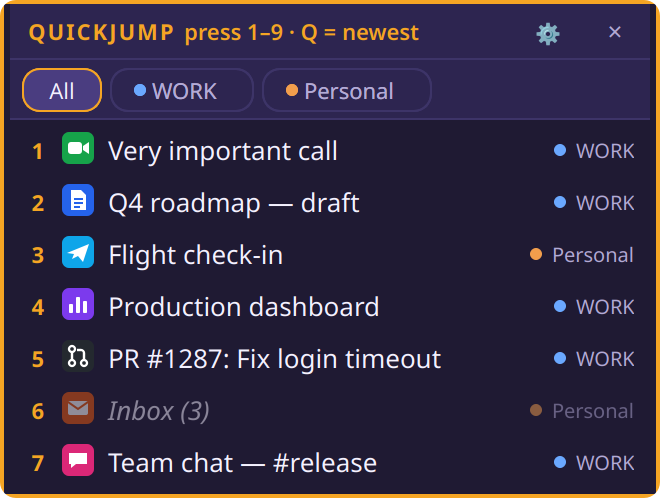

Every profile.
Global hotkeys.
The free desktop agent merges all your Chrome profiles into one window and jumps from any app, even when Chrome is closed.
The free desktop agent merges all your Chrome profiles into one window and jumps from any app, even when Chrome is closed.
